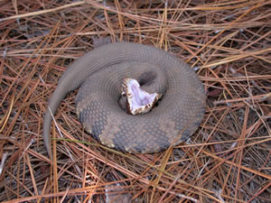

This is an animal that live at T.O. Fuller State Park. If you're hiking the trails at the park or playing golf on the golf course, there is a chance you may run into this animal. You are almost always likely to see this snake near water as it is also called water moccasin. It is the most venomous snake in the area and can be aggressive. When threatened, it will open its mouth which is all white inside. Another type of animal that live in the park is an egret, a tall white bird that can be found at the water's edge.
COTTONMOUTH